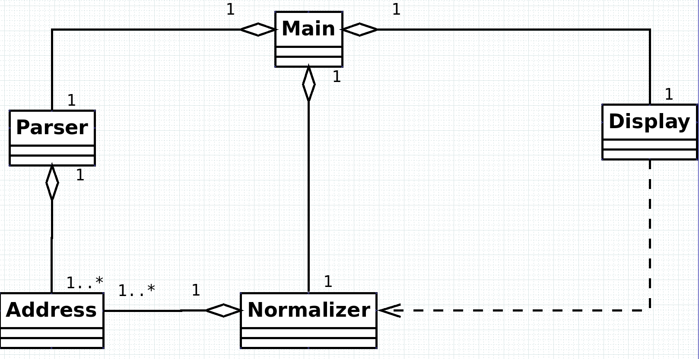

0. Preface:
1. Purpose : The purpose for this document is to create a system architectural design for our address
normalizing system.
2. Audience : Bulldogs developers team and professor Jon Beck
3. Version : 20 March 2016
4. Author : Bulldogs team
5. Contact :
a. Brent Henderson <bmh6542@truman.edu>
b. Dipesh Shrestha <ds7523@truman.edu>
1. Use Cases:
-
1. Normalize a batch of addresses
-
a. The user starts the system by running the address normalizing system (requirement 4.1).
-
b. The user loads a file into the system (requirement 3.1, 3.4).
-
c. The user initiates the batch address normalization process by clicking the "normalize button" (requirements 4.1, 4.5).
-
d. The system normalizes the input files (requirements 3.1, 3.2, 3.4).
-
e. The system outputs the results into two files.
-
i. File one contains a list of normalized addresses.
-
ii. File two contains a list of invalid addresses or addresses which failed to be normalized.
-
2. Normalize a single address
-
a. The user starts the system by running the address normalizing system (requirement 4.1).
-
b. The user uses the single address entry box to enter an address to normalize (requirement 3.3).
-
c. The user initiates the single address normalization process by clicking the "normalize button" (requirements 4.1, 4.5).
-
d. The system starts the normalization process (requirements 3.1, 3.2, 3.3).
-
e. The system displays the result on the screen (requirements 4.1, 4.5).
2. Architectural style:
We will be using the main-subroutine style, because the system has one main function that makes it suitable
for main-subroutine implementation. The use of subroutines makes the system easy to update because they allow
for easy identification and modification of any particular function.
3. Future change:
If the postal standards were to change, we could identify the subroutine responsible for checking for address syntax and change it accordingly.
Since there is little interdependence between classes, making future changes to the system will often only require changing a single class, or
making a new class without having to modify any existing code. For example, we would change the Parser class to accommodate the addition of an
AI engine to parse input accordingly.
The responsibilities are separated well between the various classes, so it should not be difficult to decide which class needs to be modified,
and if the whole system needs to be modified, the change would most likely be similar in each class. For example, a change in the USPS address
standards would require changing a method in the Normalizer class. A more significant change, such as the addition of a new address field for
all U.S. addresses, would require a new method for this new address field in the Parser class, a new variable for the address field in the
Address class, and a new method to normalize this address field in the Normalizer class.
4. Implementation language:
We will be writing our system in Java because it is the language that we are all most familiar with, and it will be simpler to implement with our
architecture style of main-subroutine. By using Java’s object-oriented design, we will have a central method in the main class that will create
and manage objects of different classes, which hold the subroutines needed to normalize addresses. The main method will then be used to loop
through the subroutines until all of the addresses have been normalized.
5. Main Classes:
-
1. Address: an object to represent a physical US address
-
2. Parser: an object which will read the input and parse the input into different components
-
3. Normalizer: an object which will use the Address objects to produce a normalized version of the input address
-
4. Main: class that contains the necessary objects and methods to make the program run correctly
-
5. Display: an object that will produce a GUI for the user to input address information or a batch file into, as well as display the output files
6. Class Diagram:
